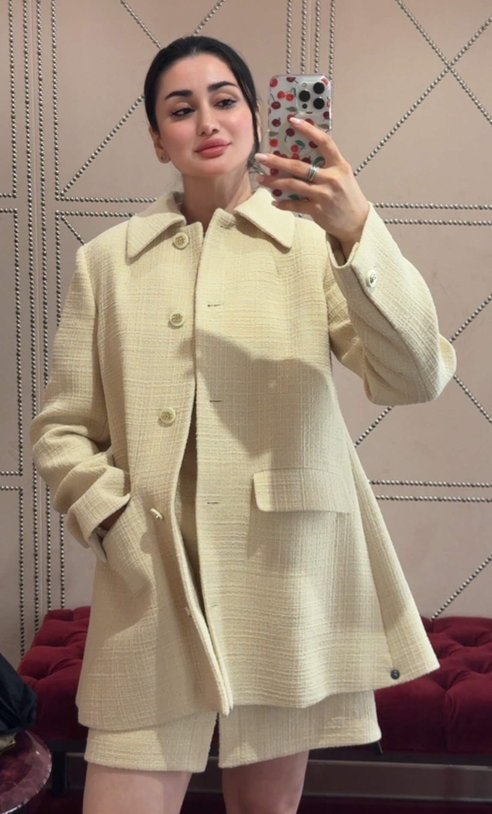
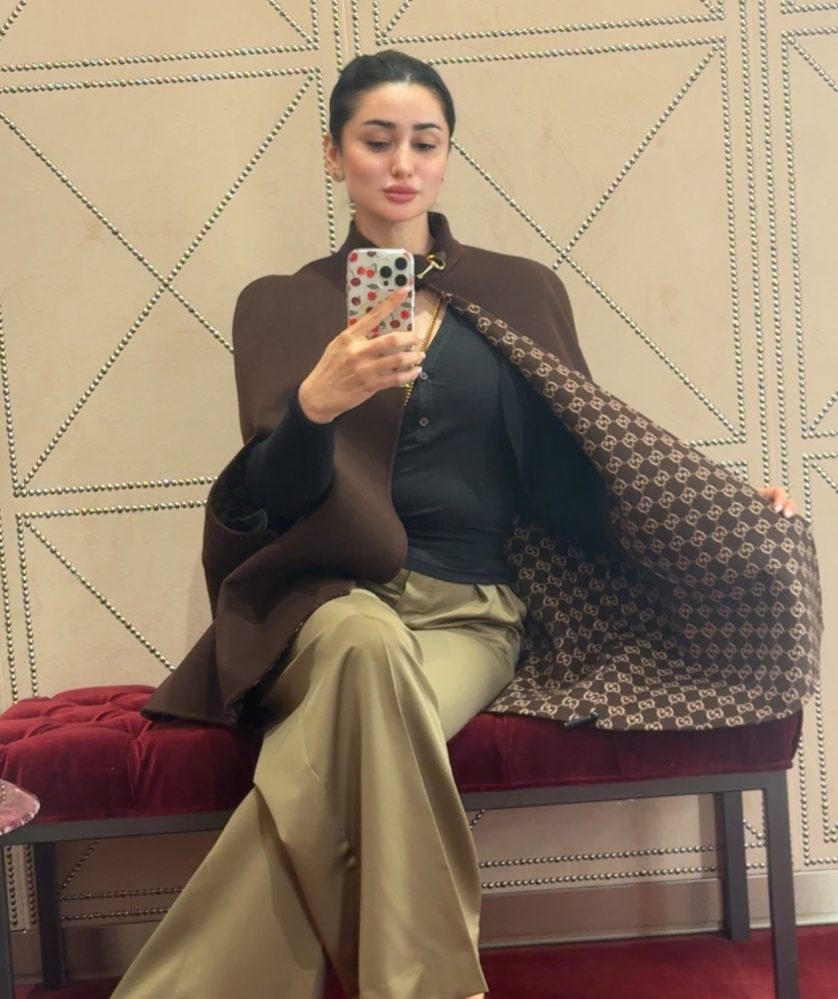
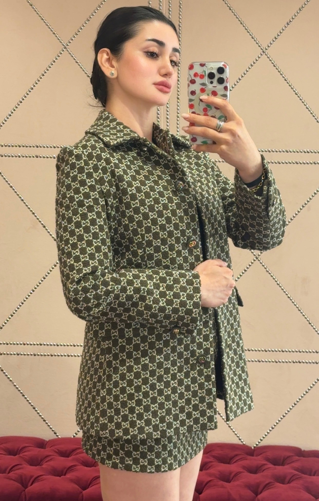
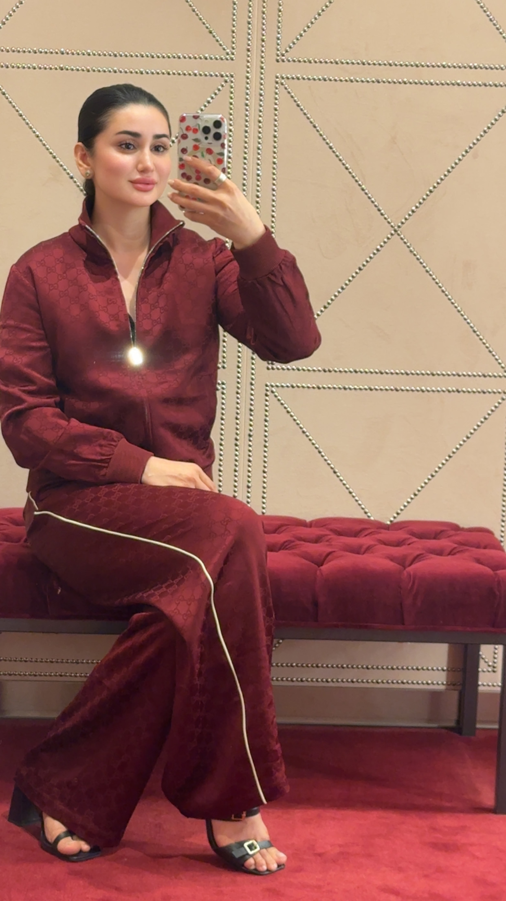

Add assets/images/care.jpg
Years
Adult care
I cared for adults who needed daily support where, and for how long. I learned patience, how to read what someone needs before they say it, and how to earn trust slowly.
How looking after people became a career in luxury fashion at Celine.
Four rules for service that people come back for.

Why a fashion advisor is teaching herself technology.
Three kinds of work, and the one I am building toward.
Years
I cared for adults who needed daily support where, and for how long. I learned patience, how to read what someone needs before they say it, and how to earn trust slowly.

Year to today
At Celine I work as a job title, advising clients on ready-to-wear, leather goods and accessories. One or two real results: repeat clients, sales ranking, an award.

Now
I am teaching myself to use AI tools to plan, write and build. Courses taken, tools used, a first project. This website is part of that learning.

Next
A small, licensed home where adults who need daily care are known by name and treated with the same attention I give every client today. Everything I am learning goes toward opening it.
I ask about the occasion, the wardrobe and the person before I show a single piece.
Sizes, preferences, birthdays, the bag someone almost bought last spring.
A client who takes their time and loves what they chose always comes back.
The relationship starts at the sale. I check in, and I let people know when something arrives that suits them.